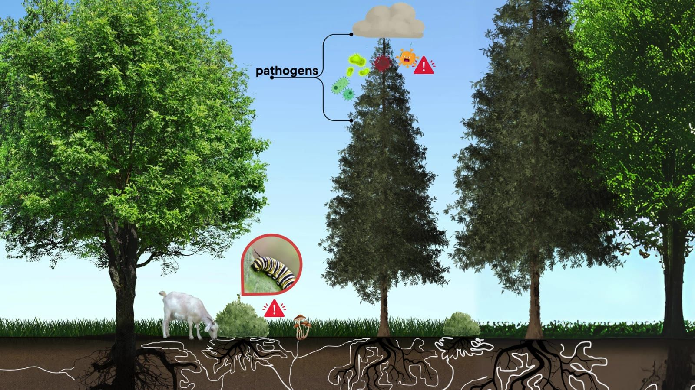
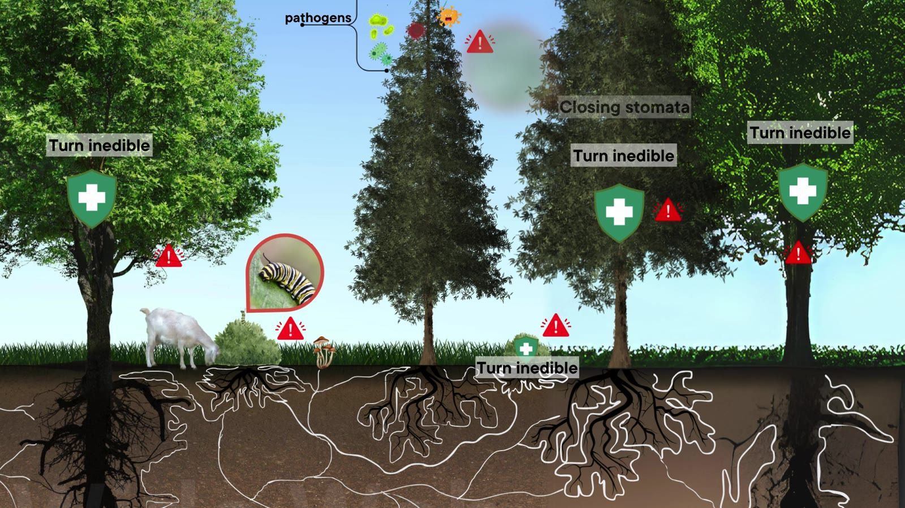
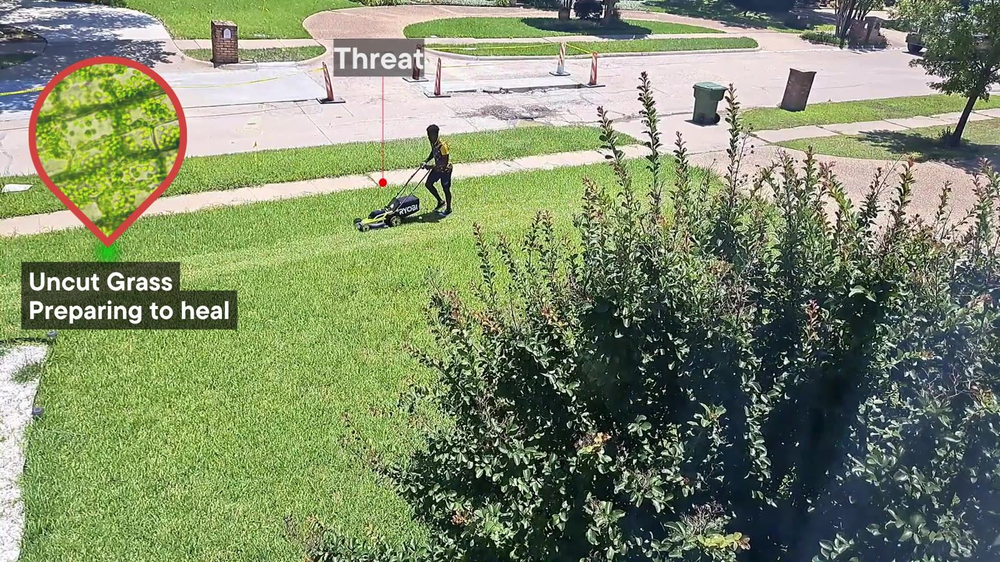

Motion · Storytelling · Science explainer
Wood Wide Web
A 25-second animated explainer on how plants warn each other
The problem
Plants and trees exchange signals through underground fungal networks, often called the “wood wide web.” It’s a fascinating idea, but invisible, which makes it hard to picture.
My role
I made the animation, combining illustrated characters, an underground cross-section and live footage.
Process
Make the invisible network visible
The video opens with plants greeting each other above ground, then cuts below ground to show roots linked by a network. When a threat appears, like a caterpillar or a grazing animal, warning signals travel through the roots and neighboring plants respond by turning inedible.

A threat appears 
Neighbors respond: “Turn inedible” Bring it back to the real world
The final shots switch to live footage of a lawn being mowed and aerial views of uncut growth, so viewers connect the idea to things they see every day.

Back to the real world
Outcome
The piece shows how I approach explanation: find the story, give the abstract idea characters, and end where the viewer lives.